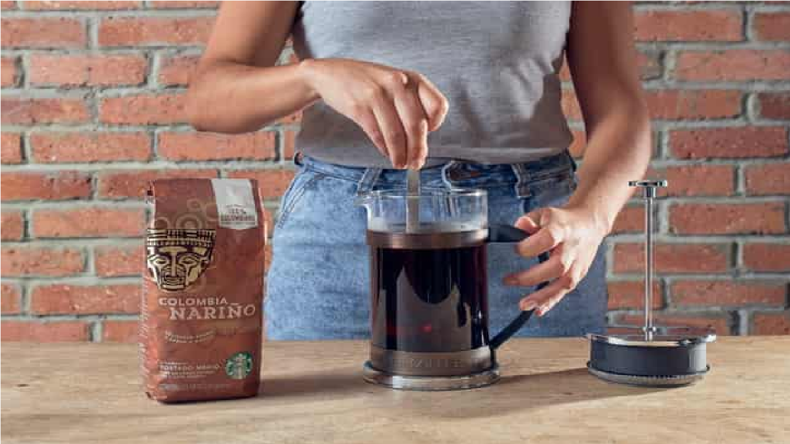
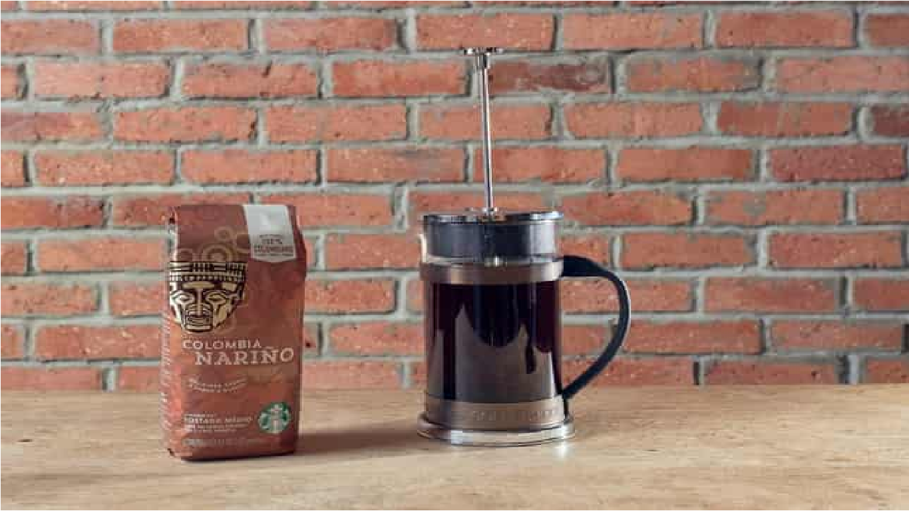
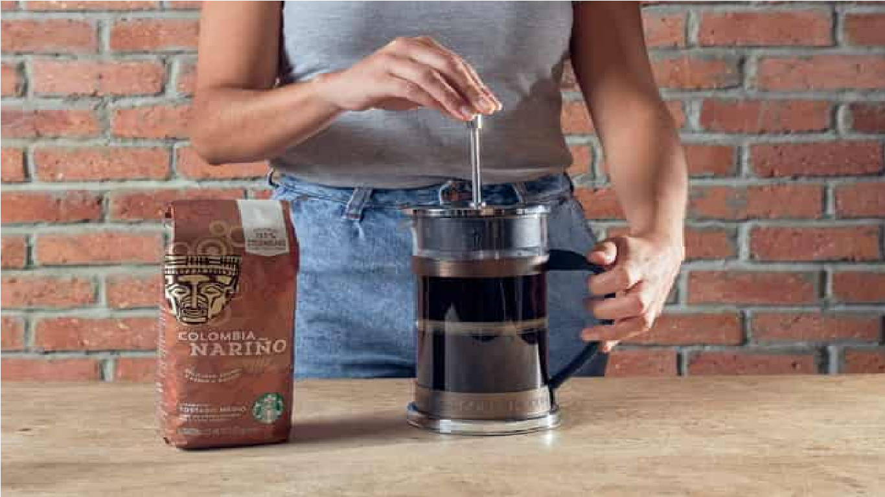

¿Qué necesitamos?- Tu CAFÉ STARBUCKS COLOMBIA NARIÑO
- Prensa Francesa
- Cuchara
- Tu taza favorita
- Agua
Prepara tu prensa de café y no olvides precalentar la prensa de café enjuagándola con agua caliente. No olvides desechar el agua antes de agregar los pasos.
Paso 1:Agrega el café molido grueso. Usa 2 cucharadas (10 g) de café molido por cada taza (180 ml) de agua caliente. Agrega el café molido a la prensa de café vacía.
Para este método de preparación, puedes usar tu café molido favorito en tamaño 15 para producir un rico sabor sin amargura.
Paso 2: Vierte agua justo debajo del borde de la prensa.
Para obtener la mejor preparación, agrega agua que esté 30 segundos después de que haya hervido. La temperatura del agua afecta la eficiencia con la que se extraen los sabores del café.
La temperatura ideal para preparar café con una prensa debe estar entre 90 y 96 °C.
Paso 3: Revuelve suavemente los granos varias veces con una cuchara. Una o dos veces es suficiente.
Paso 4:Coloca la tapa del émbolo, asegura y espera.

Paso 5: Espera 4 minutos para que se libere el café.
Paso 6:Empuja firmemente el émbolo hacia abajo, separando así el café de la superficie, presionando lentamente el émbolo hacia abajo.

Paso 7: Sirve y saborea tu café favorito en casa
¡Siente el aroma y disfruta de tu taza de café Colombia Nariño recién hecho como si estuvieras en una de nuestras tiendas!
created with
Website Builder Software .